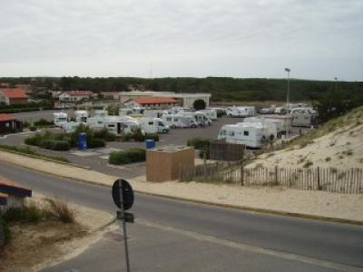
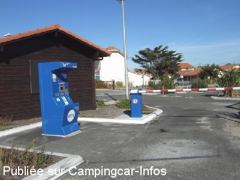
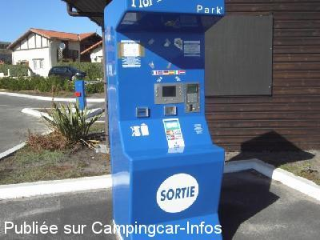
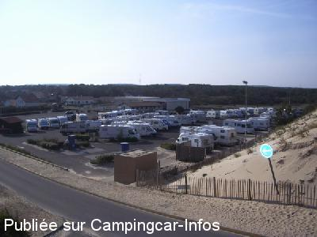

ASN = Aire de services avec stationnement nuit possible de :
MIMIZAN
(N° 598)
Accès/adresse :
Rue des Lacs / Rue des Gourbets
40200 MIMIZAN
40200 MIMIZAN
Latitude : (Nord) 44.20507° Décimaux ou 44° 12′ 18′′
Longitude : (Ouest) -1.29696° Décimaux ou -1° 17′ 49′′
Tarif : 2015
10 premières minutes de stationnement gratuites
Stationnement, taxe de séjour : 9,50 à 14,50 €
Services gratuits
Paiement par carte bancaire uniquement
Type de borne : FLOT BLEU
Services :


Petits commerces et épicerie à 200 m
Autres informations :
Ouverte toute l'année
70 emplacements
Interdit aux C-C avec remorque
Tel : +33(0)558 094 444
http://www.mimizan-tourisme.com

Le 19/07/2012 par Gérard du 27

Le 26/10/2010 par niceday

Le 26/10/2010 par niceday

Le 18/04/2010 par coco et nath
de
philippedu62
le 26/08/2015 :
de passage pour les vacances en aout 2015
dans la journée il faut séjourner sur le parking ( avenue maurice martin jusque 20h ) et aprés 20h il faut prendre direction mimizan ville a gauche au rond point a la sortie de mimizan plage il y a une aire de camping car ( 2 nuits gratuit ) mais sa va pas durer , un panneau permis de construire pour un casino
sinon mimizan plage ( superbe plage et belle ville )
de passage pour les vacances en aout 2015
dans la journée il faut séjourner sur le parking ( avenue maurice martin jusque 20h ) et aprés 20h il faut prendre direction mimizan ville a gauche au rond point a la sortie de mimizan plage il y a une aire de camping car ( 2 nuits gratuit ) mais sa va pas durer , un panneau permis de construire pour un casino
sinon mimizan plage ( superbe plage et belle ville )
de
ixeo23
le 06/07/2015 :
De passage le 22 juin 2015. Pas rencontrer tous les désagréments du 5 juillet 2015 ; pour nous RAS aire propre, électricité et à 100 m de la plage .
De passage le 22 juin 2015. Pas rencontrer tous les désagréments du 5 juillet 2015 ; pour nous RAS aire propre, électricité et à 100 m de la plage .
de
Berny29
le 05/07/2015 :
Le vendredi 03 juillet, la police municipale a fait sortir tous les camping-cars de l'aire de stationnement pour changer le tarif à la borne. celui ci est passé de 13 euros à 14,5 euros.
La mairie de Mimizan a décidé de faire payer 1,5 euros de taxe de séjour par camping-car. Ceci bien que le tarif affiché etait valable jusqu'en septembre.
Le vendredi 03 juillet, la police municipale a fait sortir tous les camping-cars de l'aire de stationnement pour changer le tarif à la borne. celui ci est passé de 13 euros à 14,5 euros.
La mairie de Mimizan a décidé de faire payer 1,5 euros de taxe de séjour par camping-car. Ceci bien que le tarif affiché etait valable jusqu'en septembre.
de
karine et thierry
le 21/05/2015 :
de passage en mars 2015 ,certes emplacements pas très larges , mais proche du village très agréable avec tout commerce , plage a deux pas , et branchements électrique pour tous , le problème de la barrière oui mais l'agent municipal est là pour résoudre , merci a la commune
de passage en mars 2015 ,certes emplacements pas très larges , mais proche du village très agréable avec tout commerce , plage a deux pas , et branchements électrique pour tous , le problème de la barrière oui mais l'agent municipal est là pour résoudre , merci a la commune
de
jean et rose68
le 04/05/2015 :
bonjour , sommes passés fin avril 2015 , les places ne sont pas trop larges il est vrai , mais on peut s'asseoir devant ou derrière le CC , mais ces bornes de paiement automatiques illisibles et compliquées posent plus de problèmes ..
bonjour , sommes passés fin avril 2015 , les places ne sont pas trop larges il est vrai , mais on peut s'asseoir devant ou derrière le CC , mais ces bornes de paiement automatiques illisibles et compliquées posent plus de problèmes ..
de
Bilou
le 15/09/2014 :
Week-end du 13-14/09/2014 : l'aire de Mimizan-plage serait très bien si les places étaient un peu plus larges (on se croirait sur un parking pour automobiles) et s'il y avait "plusse" de prises électriques (car branchement électrique ou non, c'est le même prix) .
Week-end du 13-14/09/2014 : l'aire de Mimizan-plage serait très bien si les places étaient un peu plus larges (on se croirait sur un parking pour automobiles) et s'il y avait "plusse" de prises électriques (car branchement électrique ou non, c'est le même prix) .
de
Rigaux
le 12/08/2014 :
Bonjour
De passage le 4/08/14 je n'ai fait que passer.Dommage que certains camping cariste prennent 2 places .Il y a des campings si on veut s'étaler....Je reviendrai pour visiter Mimizan à autre période.
Bonjour
De passage le 4/08/14 je n'ai fait que passer.Dommage que certains camping cariste prennent 2 places .Il y a des campings si on veut s'étaler....Je reviendrai pour visiter Mimizan à autre période.
de
joca44
le 09/06/2014 :
Avons passé une nuit le 02/05 sur ce parking très propre protégé du vent par la dune.Les emplacements ne sont pas larges mais longs (possible de manger devant ou derrière le CC) et possèdent l'électricité et un robinet d'eau.Cces à 10mn à pied.
Avons passé une nuit le 02/05 sur ce parking très propre protégé du vent par la dune.Les emplacements ne sont pas larges mais longs (possible de manger devant ou derrière le CC) et possèdent l'électricité et un robinet d'eau.Cces à 10mn à pied.
de
Marc
le 21/05/2014 :
De passage le 7 mai 2014. Comme dit plus haut, les emplacements délimités à la peinture sont trop étroits et quand l'aire est bondée, comme c'était le cas lors de mon passage, c'est à peine si l'on peut ouvrir la porte du cc. Quand aux crétins qui prennent 2 places en étalant tables et chaises, ils méritent un coup de pied au c.l.
Cela étant aire bien aménagée avec électricité (prises trop peu nombreuses) et eau.
De passage le 7 mai 2014. Comme dit plus haut, les emplacements délimités à la peinture sont trop étroits et quand l'aire est bondée, comme c'était le cas lors de mon passage, c'est à peine si l'on peut ouvrir la porte du cc. Quand aux crétins qui prennent 2 places en étalant tables et chaises, ils méritent un coup de pied au c.l.
Cela étant aire bien aménagée avec électricité (prises trop peu nombreuses) et eau.
de
SergentPatoche
le 12/05/2014 :
De passage en Mai 2014, nous avons trouvé cet aire très propre et très fonctionnelle avec des emplacements disposant d'un point d'eau et d'une alimentation électrique. La plage se trouve juste derrière la dune bordant l'aire de stationnement. Non loin du Marché et des commerces. A vérifier cependant pour les véhicules tractant une remorque, il me semble qu'ils ne sont pas admis. Paiement par carte bancaire avec borne. Aire disposant de toilettes gratuites.
De passage en Mai 2014, nous avons trouvé cet aire très propre et très fonctionnelle avec des emplacements disposant d'un point d'eau et d'une alimentation électrique. La plage se trouve juste derrière la dune bordant l'aire de stationnement. Non loin du Marché et des commerces. A vérifier cependant pour les véhicules tractant une remorque, il me semble qu'ils ne sont pas admis. Paiement par carte bancaire avec borne. Aire disposant de toilettes gratuites.
de
gregory
le 19/04/2014 :
De passage en avril 2014. .. aire agréable très proche de la mer (100m), emplacements macadamises qui sont délimités via un marquage au sol à la peinture. Par contre je trouve que les emplacements ne sont pas assez larges. Et pour cause on peut juste sortir de son cc. Concernant l'électricité, il n'y a pas assez de prises.
De passage en avril 2014. .. aire agréable très proche de la mer (100m), emplacements macadamises qui sont délimités via un marquage au sol à la peinture. Par contre je trouve que les emplacements ne sont pas assez larges. Et pour cause on peut juste sortir de son cc. Concernant l'électricité, il n'y a pas assez de prises.
de
sabine et fabrice
le 04/10/2013 :
aire propre avec toutes commodites
tres proches de la mer et du centre ville
nous recommandons
aire propre avec toutes commodites
tres proches de la mer et du centre ville
nous recommandons
de
thierry et Françoise
le 23/08/2013 :
de passage sur cette aire du 23 au 25 août, il faut comprendre le mode de stationnement en quinconce. autrement aire en bord d océan, aire calme avec une navette en juillet et août pour rejoindre le centre ville de mimizant ou les divers campings du bord de mer, ainsi que le centre commercial
de passage sur cette aire du 23 au 25 août, il faut comprendre le mode de stationnement en quinconce. autrement aire en bord d océan, aire calme avec une navette en juillet et août pour rejoindre le centre ville de mimizant ou les divers campings du bord de mer, ainsi que le centre commercial
de
Alain et Gilles
le 19/03/2013 :
Cette aire est très bien située, bien indiquée, bien équipée sur goudron (prises de courant en nombre suffisant, robinets d'eau bien répartis, vidanges fonctionnelles) avec tarif très raisonnable et commerces dans la rue. Merci à la municipalité pour ce bon accueil.
Cette aire est très bien située, bien indiquée, bien équipée sur goudron (prises de courant en nombre suffisant, robinets d'eau bien répartis, vidanges fonctionnelles) avec tarif très raisonnable et commerces dans la rue. Merci à la municipalité pour ce bon accueil.